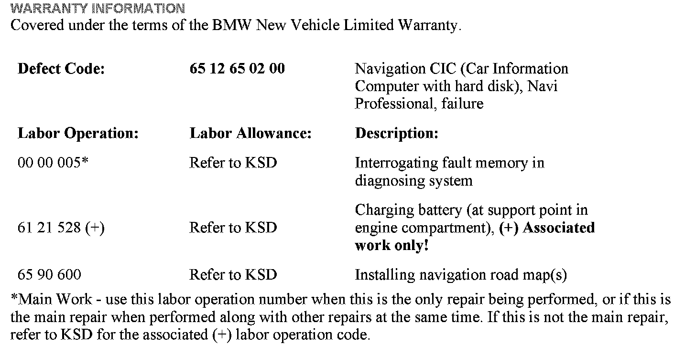
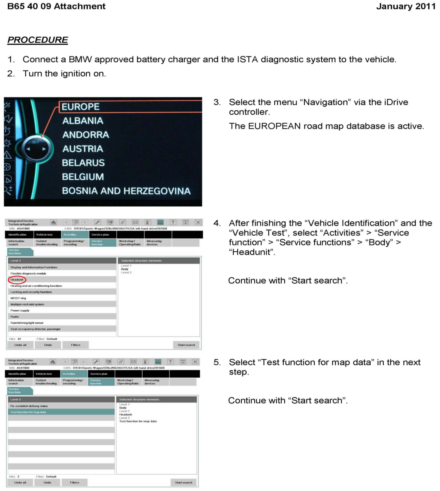
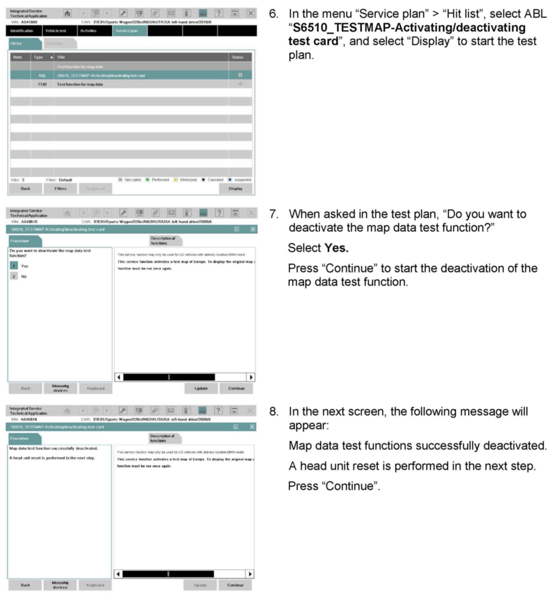
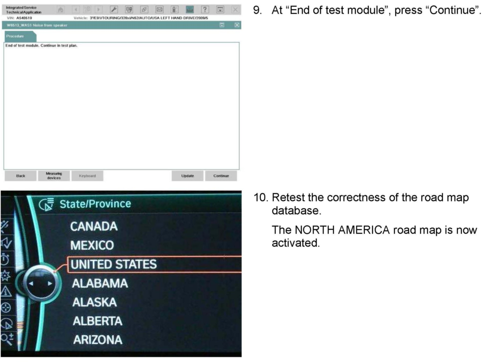

Navigation System - European Road Map Data Displayed
SI B65 40 09Audio, Navigation, Monitors, Alarms, SRS
January 2011
Technical Service
This Service Information bulletin supersedes SI B65 40 09 dated February 2010.
[NEW] designates changes to this revision
SUBJECT
CIC Navigation: European Road Map Is Displayed
MODEL
All models from September 2008 on with option 609 (Navigation System Professional, CIC)
SITUATION
The European road map is displayed or the vehicle position is in the middle of the Atlantic Ocean.
^ The current vehicle position is incorrect.
^ No US addresses can be entered.
CAUSE
The road map test function is activated.
CORRECTION
Deactivate the road map test function.
[NEW] PROCEDURE A
Refer to Attachment A.

WARRANTY INFORMATION
ATTACHMENTS



B654009 - PROCEDURE